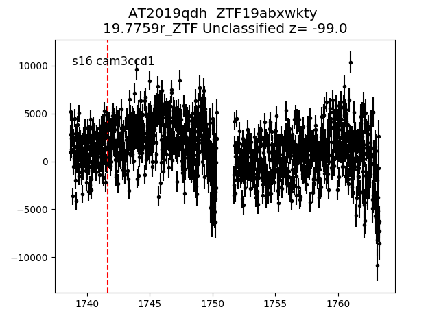

all transients in sector16 (73 total)
Each figure has three panels. The top panel shows the transient light curve, the middle panel shows the local background (estimated in an annulus), and the bottom panel shows a "background-model corrected" light curve. Details about the background model are in the README.
The vertical red line marks the time of discovery reported to TNS. Other useful metadata from TNS is in the figure title.
Note that the top and bottom panel are in magnitudes, while the middle panel is in differential flux units. The magnitudes are calibrated to the flux in the reference image used for image subtraction. Thus, flux from the host galaxy is included in these magnitudes.
3-sigma upper limits are plotted as triangles with no errorbars. A typical limiting magnitude is 19.6 in 30 minutes or 18.4 in 200 seconds (for low backgrounds).
The links allow you to download the light curve data as a text file.
More details in the README.
2019rle
2019sej
2019qdm
2019sbu
2019qsc
2019qew
2019qyc
2019sdp
2019qxo
2019rwg
2019qqk
2019qpx
2019qib
2019qdh

2019rqg
2019ryj
2019qcw
 2019qhg
2019rvx
2019rre
2019ruf
2019sic
2019rwh
2019rqd
2019sgb
2019rmp
2019sbz
2019qty
2019sfx
2019rid
2019qhh
2019qqr
2019sdl
2019qmm_detrended
2019qsc
2019rvh
2019rrc
2019qhg
2019rvx
2019rre
2019ruf
2019sic
2019rwh
2019rqd
2019sgb
2019rmp
2019sbz
2019qty
2019sfx
2019rid
2019qhh
2019qqr
2019sdl
2019qmm_detrended
2019qsc
2019rvh
2019rrc
 2019ruc
2019rex
2019sbi
2019rrd
2019qjh
2019qdi
2019rdl
2019rqf
2019qrh
2019qwf
2019pzt
2019sbx
2019saz
2019qbs
2019qpc
2019rqu
2019qoj
2019qyb
2019qgx
2019qwj
2019qmm
2019qsc_detrended
2019qtw
2019rhy
2019rpz
2019qqs
2019ruc
2019rex
2019sbi
2019rrd
2019qjh
2019qdi
2019rdl
2019rqf
2019qrh
2019qwf
2019pzt
2019sbx
2019saz
2019qbs
2019qpc
2019rqu
2019qoj
2019qyb
2019qgx
2019qwj
2019qmm
2019qsc_detrended
2019qtw
2019rhy
2019rpz
2019qqs
 2019rhl
2019qmt
2019sap
2019qey
2019rdp
2019qwl
2019rug
2019ris
2019qgh
2019qcu
2019rhl
2019qmt
2019sap
2019qey
2019rdp
2019qwl
2019rug
2019ris
2019qgh
2019qcu